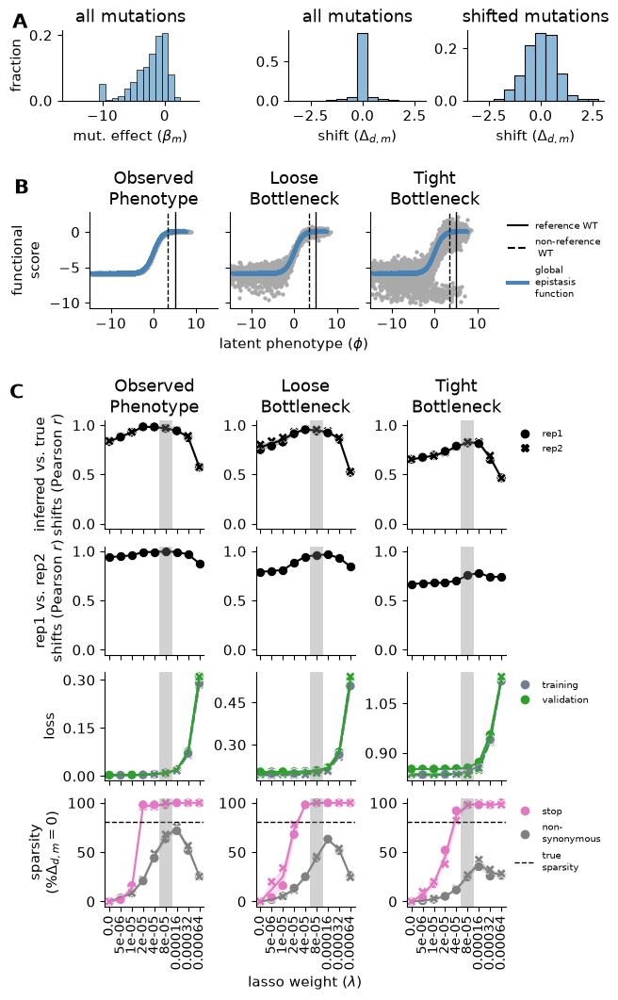
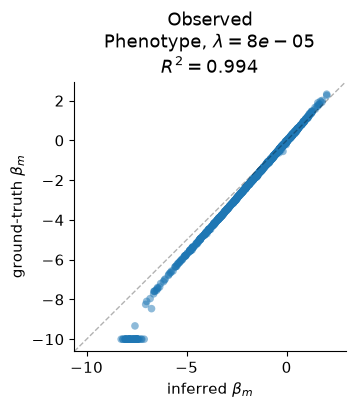
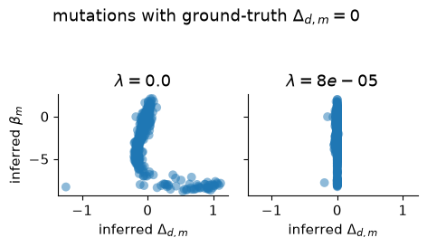
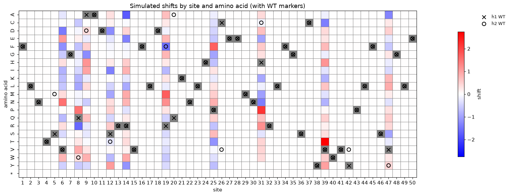

Simulation Manuscript Figures¶
Publication-quality figures from simulation pipeline CSV outputs.
Outline:
Composite main figure (panels A–C) —
main_figure.pdfGround-truth correlation scatter —
ground_truth_correlation.pdfSparsity diagnostic scatter —
sparsity_diagnostic.pdfMutation effect heatmap with WT markers (inline only)
[1]:
import warnings
import os
import pandas as pd
import numpy as np
import matplotlib.pyplot as plt
import matplotlib.ticker as mticker
import matplotlib.lines as mlines
import seaborn as sns
import scipy.stats
%matplotlib inline
warnings.filterwarnings("ignore")
[2]:
config_path = "config/config.yaml"
downstream_config_path = "config/config_downstream.yaml"
output_dir = None
[3]:
# Parameters
config_path = "config/config.yaml"
downstream_config_path = "config/config_downstream.yaml"
output_dir = "results-prod-287-config-tier-split"
[4]:
import sys
sys.path.insert(0, "notebooks")
from _common import load_config
config = load_config(config_path, downstream_config_path)
sim = config["simulation"]
if output_dir is None:
output_dir = sim["output_dir"]
lasso_choice = sim["lasso_choice"]
# GE parameters for Panel B overlay
wt_latent = sim["wt_latent"]
sigmoid_phenotype_scale = sim["sigmoid_phenotype_scale"]
figures_dir = os.path.join(output_dir, "figures")
os.makedirs(figures_dir, exist_ok=True)
print(f"Output dir: {output_dir}")
print(f"Figures dir: {figures_dir}")
print(f"Lasso choice: {lasso_choice}")
Output dir: results-prod-287-config-tier-split
Figures dir: results-prod-287-config-tier-split/figures
Lasso choice: 8e-05
Load CSV intermediates¶
[5]:
simulated_muteffects_df = pd.read_csv(
os.path.join(output_dir, "simulated_muteffects.csv")
)
simulated_func_scores_df = pd.read_csv(
os.path.join(output_dir, "simulated_func_scores.csv")
)
model_vs_truth_df = pd.read_csv(
os.path.join(output_dir, "model_vs_truth_beta_shift.csv")
)
sparsity_df = pd.read_csv(
os.path.join(output_dir, "fit_sparsity.csv")
)
replicate_corr_df = pd.read_csv(
os.path.join(output_dir, "library_replicate_correlation.csv")
)
model_vs_truth_variant_phenotype_df = pd.read_csv(
os.path.join(output_dir, "model_vs_truth_variant_phenotype.csv")
)
cv_loss_df = pd.read_csv(
os.path.join(output_dir, "cross_validation_loss.csv")
)
print("Loaded 7 CSV files:")
for name, df in [
("simulated_muteffects", simulated_muteffects_df),
("simulated_func_scores", simulated_func_scores_df),
("model_vs_truth_beta_shift", model_vs_truth_df),
("fit_sparsity", sparsity_df),
("library_replicate_correlation", replicate_corr_df),
("model_vs_truth_variant_phenotype", model_vs_truth_variant_phenotype_df),
("cross_validation_loss", cv_loss_df),
]:
print(f" {name}: {len(df)} rows, columns: {list(df.columns)}")
Loaded 7 CSV files:
simulated_muteffects: 1000 rows, columns: ['mutation', 'beta_h1', 'wt_aa', 'site', 'mut_aa', 'shifted_site', 'shift', 'beta_h2', 'wt_aa_h1', 'wt_aa_h2', 'bundle_mut']
simulated_func_scores: 349866 rows, columns: ['library', 'homolog', 'aa_substitutions', 'func_score_type', 'func_score', 'pre_sample', 'func_score_var', 'pre_count', 'post_count', 'pre_count_wt', 'post_count_wt', 'pseudocount', 'n_aa_substitutions', 'variant_class', 'latent_phenotype']
model_vs_truth_beta_shift: 108 rows, columns: ['library', 'measurement_type', 'fusionreg', 'measurement_library', 'parameter', 'corr', 'fusionreg_cat']
fit_sparsity: 108 rows, columns: ['dataset_name', 'fusionreg', 'mut_type', 'mut_param', 'sparsity', 'library', 'library_type', 'measurement_type', 'fusionreg_cat']
library_replicate_correlation: 81 rows, columns: ['mut_param', 'correlation', 'fusionreg', 'measurement_type', 'fusionreg_cat']
model_vs_truth_variant_phenotype: 54 rows, columns: ['library', 'measurement_type', 'fusionreg', 'dataset_name', 'variant_phenotype_corr', 'variant_phenotype_mae', 'fusionreg_cat']
cross_validation_loss: 108 rows, columns: ['fusionreg', 'library', 'measurement_type', 'dataset_name', 'dataset', 'loss', 'lib_dataset', 'mean_loss', 'fusionreg_cat']
[6]:
rc_kwargs = {
"legend.frameon": False,
"font.size": 11,
"font.weight": "normal",
}
plt.rcParams.update(**rc_kwargs)
Composite Main Figure (Panels A–C)¶
Simulation main figure combining three panels:
Panel A: Histograms of beta distribution, all-mutation shifts, and shifted-only shifts
Panel B: Latent phenotype vs functional score for 3 noise levels with GE curve overlay
Panel C: Diagnostic line plots (4 rows x 3 columns) across noise levels
[7]:
# ── Prepare data for composite figure ──
bottlenecks = {
"observed_phenotype": "Observed\nPhenotype",
"loose_bottle": "Loose\nBottleneck",
"tight_bottle": "Tight\nBottleneck",
}
# Y-axis labels
observed_phenotype_ylabel = "functional\nscore"
model_truth_corr_ylabel = "inferred vs. true\nshifts (Pearson $r$)"
lib_corr_ylabel = "rep1 vs. rep2\nshifts (Pearson $r$)"
loss_ylabel = "loss"
sparsity_ylabel = "sparsity\n$(\%\Delta_{d,m}=0)$"
# X-axis labels
beta_dist_label = r"mut. effect $(\beta_{m})$"
shift_dist_label = r"shift $(\Delta_{d,m})$"
latent_phenotype_label = "latent phenotype ($\phi$)"
lasso_strength_label = "lasso weight ($\lambda$)"
# Palettes
mut_type_palette = {"nonsynonymous": "grey", "stop": "#E377C2"}
dataset_palette = {"training": "slategrey", "validation": "#2CA02C"}
groundtruth_color = "steelblue"
ref_wildtype_color = "black"
nonref_wildtype_color = "black"
x_scale = (-15, 15)
point_size = 55
# Precompute derived quantities for Panel B
# Ground truth GE curve from config parameters (no pickle needed)
def ge_function(z):
"""Sigmoid global epistasis: g(z) = -scale/(1+exp(-wt)) + scale/(1+exp(-z))."""
ge_bias = -sigmoid_phenotype_scale / (1 + np.exp(-wt_latent))
return ge_bias + (sigmoid_phenotype_scale / (1 + np.exp(-z)))
gt_points = (
simulated_func_scores_df
.query(
"func_score_type == 'observed_phenotype'"
" and latent_phenotype > @x_scale[0]"
" and latent_phenotype < @x_scale[1]"
)
.sample(min(1500, len(simulated_func_scores_df.query(
"func_score_type == 'observed_phenotype'"
))), random_state=42)
[["latent_phenotype", "func_score"]]
.rename(columns={"latent_phenotype": "x", "func_score": "y"})
.sort_values("x")
)
# WT latent phenotypes
wt_rows = simulated_func_scores_df.query("variant_class == 'wildtype'")
reference_wt_latent = wt_rows.query("homolog == 'h1'")["latent_phenotype"].values[0]
non_reference_wt_latent = wt_rows.query("homolog == 'h2'")["latent_phenotype"].values[0]
# True sparsity
true_sparsity = (
(simulated_muteffects_df["shift"] == 0).sum()
/ len(simulated_muteffects_df)
* 100
)
# Prepare Panel C data: convert fusionreg to string labels for x-axis
# Model vs truth: compute Pearson r
model_vs_truth_plot = model_vs_truth_df.copy()
model_vs_truth_plot["fusionreg_str"] = [
f"{v}" for v in model_vs_truth_plot["fusionreg"]
]
if "corr" in model_vs_truth_plot.columns:
model_vs_truth_plot["pearson_r"] = model_vs_truth_plot["corr"]
elif "correlation" in model_vs_truth_plot.columns:
model_vs_truth_plot["pearson_r"] = model_vs_truth_plot["correlation"]
elif "r2" in model_vs_truth_plot.columns:
model_vs_truth_plot["pearson_r"] = np.sqrt(model_vs_truth_plot["r2"])
else:
model_vs_truth_plot["pearson_r"] = 0.0
# Replicate correlations: compute Pearson r
replicate_corr_plot = replicate_corr_df.copy()
replicate_corr_plot["fusionreg_str"] = [
f"{v}" for v in replicate_corr_plot["fusionreg"]
]
if "correlation" in replicate_corr_plot.columns:
replicate_corr_plot["pearson_r"] = replicate_corr_plot["correlation"]
elif "corr" in replicate_corr_plot.columns:
replicate_corr_plot["pearson_r"] = replicate_corr_plot["corr"]
elif "r2" in replicate_corr_plot.columns:
replicate_corr_plot["pearson_r"] = np.sqrt(replicate_corr_plot["r2"])
else:
replicate_corr_plot["pearson_r"] = 0.0
# Sparsity: convert to percentage
sparsity_plot = sparsity_df.copy()
sparsity_plot["fusionreg_str"] = [f"{v}" for v in sparsity_plot["fusionreg"]]
# Ensure sparsity is in percentage (0-100)
if sparsity_plot["sparsity"].max() <= 1.0:
sparsity_plot["sparsity"] = sparsity_plot["sparsity"] * 100
# CV loss
cv_loss_plot = cv_loss_df.copy()
cv_loss_plot["fusionreg_str"] = [f"{v}" for v in cv_loss_plot["fusionreg"]]
# Determine the fusionreg values for x-axis ordering
fusionreg_vals = sorted(model_vs_truth_plot["fusionreg"].unique())
fusionreg_strs = [f"{v}" for v in fusionreg_vals]
# Create fusionreg index mapping for categorical x-axis in Panel C
fusionreg_idx_map = {v: i for i, v in enumerate(fusionreg_vals)}
# Add fusionreg_idx to all Panel C dataframes
model_vs_truth_plot["fusionreg_idx"] = model_vs_truth_plot["fusionreg"].map(fusionreg_idx_map)
replicate_corr_plot["fusionreg_idx"] = replicate_corr_plot["fusionreg"].map(fusionreg_idx_map)
sparsity_plot["fusionreg_idx"] = sparsity_plot["fusionreg"].map(fusionreg_idx_map)
cv_loss_plot["fusionreg_idx"] = cv_loss_plot["fusionreg"].map(fusionreg_idx_map)
print(f"Fusionreg values: {fusionreg_vals}")
print(f"WT latent (h1): {reference_wt_latent:.2f}")
print(f"WT latent (h2): {non_reference_wt_latent:.2f}")
print(f"True sparsity: {true_sparsity:.1f}%")
Fusionreg values: [np.float64(0.0), np.float64(5e-06), np.float64(1e-05), np.float64(2e-05), np.float64(4e-05), np.float64(8e-05), np.float64(0.00016), np.float64(0.00032), np.float64(0.00064)]
WT latent (h1): 5.00
WT latent (h2): 3.41
True sparsity: 81.0%
[8]:
# ══════════════════════════════════════════════════════════════════════
# Build composite main figure (panels A–C)
# ══════════════════════════════════════════════════════════════════════
fig = plt.figure(layout="constrained", figsize=(6.4, 10.5))
A, B, C = fig.subfigures(nrows=3, ncols=1, height_ratios=[0.15, 0.2, 0.65], hspace=0.05)
# ── Panel A: Histograms ──
axd_a = A.subplot_mosaic(
[["beta_dist", "empty", "shift_dist", "shift_dist_nonzero"]],
gridspec_kw={"width_ratios": [1, 0.3, 1, 1], "wspace": 0.05, "hspace": 0.05},
)
axd_a["empty"].set_visible(False)
# Panel A1: Beta distribution (all mutations)
ax = axd_a["beta_dist"]
sns.histplot(
simulated_muteffects_df,
x="beta_h1",
ax=ax,
stat="probability",
alpha=0.5,
bins=np.arange(-15.5, 5.5, 1.0),
)
ax.set_xlabel(r"mut. effect $(\beta_m)$")
ax.set_ylabel("fraction")
ax.set_title("all mutations")
# Panel A2: Shift distribution (all mutations)
ax = axd_a["shift_dist"]
sns.histplot(
simulated_muteffects_df,
x="shift",
ax=ax,
stat="probability",
alpha=0.5,
bins=np.arange(-3.25, 3.25, 0.5),
)
ax.set_ylabel(None)
ax.set_xlabel(r"shift $(\Delta_{d,m})$")
ax.set_title("all mutations")
# Panel A3: Shift distribution (shifted mutations only, excluding stops)
ax = axd_a["shift_dist_nonzero"]
shifted_nonstop = simulated_muteffects_df.query(
"shifted_site and ~mutation.str.contains('\\*')"
)
sns.histplot(
shifted_nonstop,
x="shift",
ax=ax,
stat="probability",
alpha=0.5,
bins=np.arange(-3.25, 3.25, 0.5),
)
ax.set_ylabel(None)
ax.set_xlabel(r"shift $(\Delta_{d,m})$")
ax.set_title("shifted mutations")
# ── Panel B: Latent phenotype vs functional score ──
axd_b = B.subplot_mosaic(
[
[
"observed_phenotype_latent_measured",
"loose_bottle_latent_measured",
"tight_bottle_latent_measured",
]
],
sharey=True,
)
for bottleneck, name in bottlenecks.items():
ax = axd_b[f"{bottleneck}_latent_measured"]
sub = simulated_func_scores_df.query(
"library == 'lib_1' and func_score_type == @bottleneck"
)
n_sample = min(8000, len(sub))
sns.scatterplot(
sub.sample(n_sample, random_state=42),
x="latent_phenotype",
y="func_score",
ax=ax,
s=8,
c="darkgrey",
edgecolor="darkgrey",
)
# GE curve overlay (ground truth)
sns.lineplot(
data=gt_points,
x="x",
y="y",
ax=ax,
color=groundtruth_color,
linestyle="-",
linewidth=3,
)
# WT latent phenotype lines
ax.axvline(reference_wt_latent, color=ref_wildtype_color, linewidth=1)
ax.axvline(
non_reference_wt_latent,
color=nonref_wildtype_color,
linestyle="--",
linewidth=1,
)
ax.set_title(name)
ax.set_xlim(x_scale)
if bottleneck == "observed_phenotype":
ax.set_ylabel(observed_phenotype_ylabel)
if bottleneck == "loose_bottle":
ax.set_xlabel(latent_phenotype_label)
else:
ax.set_xlabel(None)
# ── Panel C: Diagnostic metrics (4 rows x 3 columns) ──
axd_c = C.subplot_mosaic(
[
[f"{b}_shift_acc" for b in bottlenecks.keys()],
[f"{b}_shift_rep" for b in bottlenecks.keys()],
[f"{b}_shift_cv" for b in bottlenecks.keys()],
[f"{b}_shift_sparse" for b in bottlenecks.keys()],
],
sharex=True,
gridspec_kw={"hspace": 0.05},
)
for bottleneck, name in bottlenecks.items():
# ── Row 1: Shift accuracy (Pearson r) ──
ax = axd_c[f"{bottleneck}_shift_acc"]
sub = model_vs_truth_plot.query(
"measurement_type == @bottleneck and parameter == 'shift'"
).sort_values("fusionreg")
sns.scatterplot(
sub, x="fusionreg_idx", y="pearson_r", ax=ax,
style="library", legend=False, s=point_size, c="black",
)
sns.lineplot(
sub, x="fusionreg_idx", y="pearson_r", ax=ax,
legend=False, c="black",
)
ax.set_title(name)
ax.set_ylim(-0.05, 1.05)
ax.set_ylabel(model_truth_corr_ylabel if bottleneck == "observed_phenotype" else None)
ax.set_xlabel(None)
# ── Row 2: Replicate shift (Pearson r) ──
ax = axd_c[f"{bottleneck}_shift_rep"]
# Filter for shift parameter
rep_sub = replicate_corr_plot.query("measurement_type == @bottleneck")
if "mut_param" in rep_sub.columns:
rep_sub = rep_sub.query("mut_param == 'shift'")
rep_sub = rep_sub.sort_values("fusionreg")
sns.scatterplot(
rep_sub, x="fusionreg_idx", y="pearson_r", ax=ax,
c="black", legend=False, s=point_size,
)
sns.lineplot(
rep_sub, x="fusionreg_idx", y="pearson_r", ax=ax,
c="black", legend=False,
)
ax.set_ylim(-0.05, 1.05)
ax.set_ylabel(lib_corr_ylabel if bottleneck == "observed_phenotype" else None)
ax.set_xlabel(None)
# ── Row 3: Cross-validation loss ──
ax = axd_c[f"{bottleneck}_shift_cv"]
cv_sub = cv_loss_plot.query("measurement_type == @bottleneck").sort_values("fusionreg")
# Use mean_loss if available, otherwise fall back to loss
loss_col = "mean_loss" if "mean_loss" in cv_sub.columns else "loss"
sns.scatterplot(
cv_sub, x="fusionreg_idx", y=loss_col, ax=ax,
style="library" if "library" in cv_sub.columns else None,
legend=False, s=point_size,
hue="dataset" if "dataset" in cv_sub.columns else None,
palette=dataset_palette if "dataset" in cv_sub.columns else None,
)
sns.lineplot(
cv_sub, x="fusionreg_idx", y=loss_col, ax=ax,
style="library" if "library" in cv_sub.columns else None,
legend=False,
hue="dataset" if "dataset" in cv_sub.columns else None,
palette=dataset_palette if "dataset" in cv_sub.columns else None,
)
ax.set_ylabel(loss_ylabel if bottleneck == "observed_phenotype" else None)
ax.set_xlabel(None)
# ── Row 4: Sparsity ──
ax = axd_c[f"{bottleneck}_shift_sparse"]
# Filter for shift parameter
sp_sub = sparsity_plot.query("measurement_type == @bottleneck")
if "mut_param" in sp_sub.columns:
sp_sub = sp_sub.query("mut_param.str.contains('shift')")
sp_sub = sp_sub.sort_values("fusionreg")
sns.scatterplot(
sp_sub, x="fusionreg_idx", y="sparsity", ax=ax,
style="library" if "library" in sp_sub.columns else None,
legend=False, s=point_size,
hue="mut_type" if "mut_type" in sp_sub.columns else None,
palette=mut_type_palette if "mut_type" in sp_sub.columns else None,
)
sns.lineplot(
sp_sub, x="fusionreg_idx", y="sparsity", ax=ax,
legend=False,
hue="mut_type" if "mut_type" in sp_sub.columns else None,
palette=mut_type_palette if "mut_type" in sp_sub.columns else None,
)
ax.set_ylim(-5, 105)
ax.set_ylabel(sparsity_ylabel if bottleneck == "observed_phenotype" else None)
# True sparsity dashed line
ax.axhline(true_sparsity, color="k", linestyle="--", linewidth=1)
ax.set_xticks(range(len(fusionreg_vals)))
ax.set_xticklabels([str(v) for v in fusionreg_vals], rotation=90, fontsize=10)
if bottleneck == "loose_bottle":
ax.set_xlabel(lasso_strength_label)
else:
ax.set_xlabel(None)
# ── Touchup: panel labels, ticks, legends, vertical lasso bars ──
# Panel labels
axd_a["beta_dist"].text(
-0.25, 1.10, "A", ha="right", va="center",
size=15, weight="bold", transform=axd_a["beta_dist"].transAxes,
)
axd_b["observed_phenotype_latent_measured"].text(
-0.47, 1.25, "B", ha="right", va="center",
size=15, weight="bold",
transform=axd_b["observed_phenotype_latent_measured"].transAxes,
)
axd_c["observed_phenotype_shift_acc"].text(
-0.82, 1.25, "C", ha="right", va="center",
size=15, weight="bold",
transform=axd_c["observed_phenotype_shift_acc"].transAxes,
)
sns.despine(fig)
# Fix up y-axis ticks in Panel C
for ax_name, ax in axd_c.items():
if ax_name.endswith("shift_acc") or ax_name.endswith("shift_rep"):
ax.set_yticks([0.0, 0.5, 1.0])
ax.set_yticklabels(["0.0", "0.5", "1.0"])
elif ax_name.endswith("shift_sparse"):
ax.set_yticks([0, 50, 100])
ax.set_yticklabels(["0", "50", "100"])
else:
ax.yaxis.set_major_locator(mticker.MaxNLocator(3))
ticks_loc = ax.get_yticks().tolist()
ax.yaxis.set_major_locator(mticker.FixedLocator(ticks_loc))
ax.set_yticklabels([f"{x:2.2f}" for x in ticks_loc])
# Vertical grey bar at chosen lasso
ax.axvline(fusionreg_idx_map[lasso_choice], color="grey", linewidth=10, alpha=0.35)
# ── Legends ──
# Panel B legend
ax = axd_b["tight_bottle_latent_measured"]
elements = [
mlines.Line2D([], [], color=ref_wildtype_color, linestyle="-",
markersize=5, label="reference WT"),
mlines.Line2D([], [], color=nonref_wildtype_color, linestyle="--",
markersize=5, label="non-reference\n WT"),
mlines.Line2D([], [], color=groundtruth_color, linestyle="-", linewidth=3,
markersize=5, label="global\nepistasis\nfunction"),
]
ax.legend(handles=elements, bbox_to_anchor=(1.0, 1.0), loc="upper left",
frameon=False, fontsize=7.5)
# Panel C legends
ax = axd_c["tight_bottle_shift_acc"]
elements = [
mlines.Line2D([], [], color="black", marker="o", linestyle="None",
markersize=6, label="rep1"),
mlines.Line2D([], [], color="black", marker="X", linestyle="None",
markersize=6, label="rep2"),
]
ax.legend(handles=elements, bbox_to_anchor=(1.0, 1.0), loc="upper left",
frameon=False, fontsize=7.5)
ax = axd_c["tight_bottle_shift_sparse"]
elements = [
mlines.Line2D([], [], color=mut_type_palette["stop"], marker="o",
linestyle="None", markersize=6, label="stop"),
mlines.Line2D([], [], color=mut_type_palette["nonsynonymous"], marker="o",
linestyle="None", markersize=6, label="non-\nsynonymous"),
mlines.Line2D([], [], color="k", linestyle="--", linewidth=1,
markersize=5, label="true\nsparsity"),
]
ax.legend(handles=elements, bbox_to_anchor=(1.0, 1.0), loc="upper left",
frameon=False, fontsize=7.5)
ax = axd_c["tight_bottle_shift_cv"]
elements = [
mlines.Line2D([], [], color=dataset_palette["training"], marker="o",
linestyle="None", markersize=6, label="training"),
mlines.Line2D([], [], color=dataset_palette["validation"], marker="o",
linestyle="None", markersize=6, label="validation"),
]
ax.legend(handles=elements, bbox_to_anchor=(1.0, 1.0), loc="upper left",
frameon=False, fontsize=7.5)
# Save
fig.savefig(
os.path.join(figures_dir, "main_figure.pdf"),
bbox_inches="tight", dpi=300,
)
fig.savefig(
os.path.join(figures_dir, "main_figure.png"),
bbox_inches="tight", dpi=300,
)
print(f"Saved {os.path.join(figures_dir, 'main_figure.pdf')}")
plt.show()
Saved results-prod-287-config-tier-split/figures/main_figure.pdf

Ground-Truth Correlation Scatter¶
Scatter of predicted vs true mutation effects (beta) at the chosen lasso value and zero noise, with R² annotation.
[9]:
# Ground-truth correlation scatter for beta at chosen lasso, zero noise
measurement_type = "observed_phenotype"
beta_sub = model_vs_truth_plot.query(
"parameter == 'beta'"
" and measurement_type == @measurement_type"
" and fusionreg == @lasso_choice"
)
# If we have per-mutation data in model_vs_truth_df, use it directly.
# Otherwise fall back to the summary R^2 from the metrics CSV.
# The evaluate notebook saves a summary CSV with corr per (parameter,
# measurement_type, library, fusionreg). For the scatter we need the
# underlying per-mutation predicted vs true values.
# Since this notebook loads only CSVs and the per-mutation scatter requires
# the model_df (collection_muts.csv) which may or may not exist, we check
# for it and fall back to a summary annotation if not available.
collection_muts_path = os.path.join(output_dir, "collection_muts.csv")
if os.path.exists(collection_muts_path):
model_df = pd.read_csv(collection_muts_path)
data = model_df.query(
"library == 'lib_1'"
" and measurement_type == @measurement_type"
" and fusionreg == @lasso_choice"
).copy()
if "predicted_beta" in data.columns and "true_beta" in data.columns:
r, _ = scipy.stats.pearsonr(data["predicted_beta"], data["true_beta"])
r2 = r ** 2
fig, ax = plt.subplots(figsize=(3.5, 3.5))
ax.scatter(
data["predicted_beta"], data["true_beta"],
alpha=0.5, s=30, edgecolors="none",
)
ax.set_xlabel(r"inferred $\beta_m$")
ax.set_ylabel(r"ground-truth $\beta_m$")
ax.set_title(
f"{bottlenecks[measurement_type]}, $\lambda={lasso_choice}$\n$R^2={r2:.3f}$"
)
# Line of identity
lims = [
min(ax.get_xlim()[0], ax.get_ylim()[0]),
max(ax.get_xlim()[1], ax.get_ylim()[1]),
]
ax.plot(lims, lims, "k--", alpha=0.3, linewidth=1)
ax.set_xlim(lims)
ax.set_ylim(lims)
sns.despine(ax=ax)
fig.savefig(
os.path.join(figures_dir, "ground_truth_correlation.pdf"),
bbox_inches="tight", dpi=300,
)
fig.savefig(
os.path.join(figures_dir, "ground_truth_correlation.png"),
bbox_inches="tight", dpi=300,
)
print(f"Saved ground_truth_correlation.pdf (R^2 = {r2:.4f})")
plt.show()
else:
print("collection_muts.csv lacks predicted_beta/true_beta columns — "
"skipping scatter, using summary R^2 from metrics CSV.")
r2_val = beta_sub["r2"].values
print(f"Summary R^2 values for beta at lasso={lasso_choice}: {r2_val}")
else:
# Fallback: print summary from metrics CSV
print("collection_muts.csv not found — displaying summary R^2 only.")
if len(beta_sub) > 0:
r2_summary = beta_sub[["library", "r2"]].to_string(index=False)
print(f"Beta R^2 at lasso={lasso_choice}, {measurement_type}:")
print(r2_summary)
fig, ax = plt.subplots(figsize=(3.5, 3.5))
ax.text(
0.5, 0.5,
f"Beta $R^2$ = {beta_sub['r2'].mean():.3f}\n"
f"(scatter requires collection_muts.csv)",
ha="center", va="center", transform=ax.transAxes, fontsize=12,
)
ax.set_title(f"{bottlenecks[measurement_type]}, $\lambda={lasso_choice}$")
ax.set_xlabel(r"inferred $\beta_m$")
ax.set_ylabel(r"ground-truth $\beta_m$")
sns.despine(ax=ax)
fig.savefig(
os.path.join(figures_dir, "ground_truth_correlation.pdf"),
bbox_inches="tight", dpi=300,
)
fig.savefig(
os.path.join(figures_dir, "ground_truth_correlation.png"),
bbox_inches="tight", dpi=300,
)
print(f"Saved ground_truth_correlation.pdf (summary only)")
plt.show()
Saved ground_truth_correlation.pdf (R^2 = 0.9941)

Sparsity Diagnostic Scatter¶
For mutations with true shift = 0, scatter of inferred shift vs inferred beta at the chosen lasso value.
[10]:
# Sparsity diagnostic: inferred shift vs inferred beta for true-shift-zero mutations
measurement_type = "observed_phenotype"
collection_muts_path = os.path.join(output_dir, "collection_muts.csv")
if os.path.exists(collection_muts_path):
model_df = pd.read_csv(collection_muts_path)
# Two panels: lasso=0 and lasso=lasso_choice
lasso_values = sorted(set([0.0, lasso_choice]))
# Only keep values that exist in the data
available_lassos = model_df["fusionreg"].unique()
lasso_values = [v for v in lasso_values if v in available_lassos]
if len(lasso_values) == 0:
lasso_values = [available_lassos.min(), lasso_choice]
lasso_values = [v for v in lasso_values if v in available_lassos]
n_panels = len(lasso_values)
fig, axes = plt.subplots(1, n_panels, sharex=True, sharey=True,
figsize=(2.5 * n_panels, 2.5))
if n_panels == 1:
axes = [axes]
print(f"lasso_weight, sparsity (fraction shift=0)")
for i, lw in enumerate(lasso_values):
data = model_df.query(
"library == 'lib_1'"
" and measurement_type == @measurement_type"
" and fusionreg == @lw"
).copy()
# Identify true-shift-zero mutations
if "true_shift" in data.columns:
data = data.query("true_shift == 0")
elif "shift" in simulated_muteffects_df.columns:
zero_shift_muts = set(
simulated_muteffects_df.query("shift == 0")["mutation"]
)
data = data[data["mutation"].isin(zero_shift_muts)]
# Determine shift and beta column names
shift_col = (
"predicted_shift_h2"
if "predicted_shift_h2" in data.columns
else "shift_h2" if "shift_h2" in data.columns
else None
)
beta_col = (
"predicted_beta"
if "predicted_beta" in data.columns
else "beta" if "beta" in data.columns
else None
)
if shift_col and beta_col and len(data) > 0:
frac_zero = (data[shift_col] == 0).sum() / len(data)
print(f" lambda={lw}, sparsity={frac_zero:.2f}")
axes[i].scatter(
data[shift_col], data[beta_col],
alpha=0.5, s=50, edgecolors="none",
)
axes[i].set_xlabel(r"inferred $\Delta_{d,m}$")
axes[i].set_title(f"$\lambda={lw}$")
else:
axes[i].set_title(f"$\lambda={lw}$ (no data)")
print(f" lambda={lw}, no suitable columns found")
axes[0].set_ylabel(r"inferred $\beta_m$")
fig.suptitle(
r"mutations with ground-truth $\Delta_{d,m}=0$", y=1.08
)
sns.despine(fig=fig)
fig.tight_layout()
fig.savefig(
os.path.join(figures_dir, "sparsity_diagnostic.pdf"),
bbox_inches="tight", dpi=300,
)
fig.savefig(
os.path.join(figures_dir, "sparsity_diagnostic.png"),
bbox_inches="tight", dpi=300,
)
print(f"Saved sparsity_diagnostic.pdf")
plt.show()
else:
print("collection_muts.csv not found — cannot produce sparsity diagnostic scatter.")
print("This figure requires per-mutation model predictions.")
lasso_weight, sparsity (fraction shift=0)
lambda=0.0, sparsity=0.00
lambda=8e-05, sparsity=0.78
Saved sparsity_diagnostic.pdf

Mutation Effect Heatmap with WT Markers¶
Pivot table of shifts by site x amino acid, with WT residue markers for h1 (x) and h2 (o). Displayed inline only, not saved to PDF.
[11]:
# Mutation effect heatmap with h1/h2 WT markers
aas = [
"A", "C", "D", "E", "F", "G", "H", "I", "K", "L", "M", "N",
"P", "Q", "R", "S", "T", "V", "W", "Y", "*",
]
# Pivot shift values
shift_pivot = simulated_muteffects_df.pivot_table(
index="mut_aa", columns="site", values="shift"
)
shift_pivot = shift_pivot.clip(lower=-10).reindex(aas)
# Identify WT residues for h1 and h2
h1_wt = (
simulated_muteffects_df[["site", "wt_aa"]]
.drop_duplicates()
.rename(columns={"wt_aa": "wt_aa_h1"})
)
# h2 WT: if wt_aa_h2 column exists use it, otherwise infer from bundle_mut
if "wt_aa_h2" in simulated_muteffects_df.columns:
h2_wt = (
simulated_muteffects_df[["site", "wt_aa_h2"]]
.drop_duplicates()
)
else:
# Infer h2 WT from bundle mutations
bundle = simulated_muteffects_df.query("bundle_mut == True")
h2_wt = bundle[["site", "mut_aa"]].drop_duplicates().rename(
columns={"mut_aa": "wt_aa_h2"}
)
# Build marker coordinate arrays
h1_sites, h1_aas_idx = [], []
for _, row in h1_wt.iterrows():
site = row["site"]
aa = row["wt_aa_h1"]
if site in shift_pivot.columns and aa in aas:
h1_sites.append(list(shift_pivot.columns).index(site) + 0.5)
h1_aas_idx.append(aas.index(aa) + 0.5)
h2_sites, h2_aas_idx = [], []
for _, row in h2_wt.iterrows():
site = row["site"]
aa = row["wt_aa_h2"]
if site in shift_pivot.columns and aa in aas:
h2_sites.append(list(shift_pivot.columns).index(site) + 0.5)
h2_aas_idx.append(aas.index(aa) + 0.5)
# Plot
fig, ax = plt.subplots(figsize=(max(12, len(shift_pivot.columns) * 0.5), 6))
sns.heatmap(
shift_pivot,
cmap="bwr",
center=0,
vmin=-2.75,
vmax=2.75,
square=True,
linewidths=0.4,
linecolor="0.5",
cbar_kws={"shrink": 0.75, "label": "shift"},
xticklabels=True,
yticklabels=True,
ax=ax,
)
ax.set_facecolor("0.5")
# h1 WT markers (x)
ax.scatter(
h1_sites, h1_aas_idx,
marker="x", s=60, c="black", linewidths=1.5,
label="h1 WT", zorder=5,
)
# h2 WT markers (o)
ax.scatter(
h2_sites, h2_aas_idx,
marker="o", s=60, facecolors="none", edgecolors="black", linewidths=1.5,
label="h2 WT", zorder=5,
)
ax.set_ylabel("amino acid")
ax.set_title("Simulated shifts by site and amino acid (with WT markers)")
# Place legend outside the plot area
ax.legend(
bbox_to_anchor=(1.15, 1.0), loc="upper left",
frameon=False, fontsize=9,
)
sns.despine(right=False, top=False)
plt.tight_layout()
plt.show()
print("Heatmap displayed inline (not saved to file).")

Heatmap displayed inline (not saved to file).